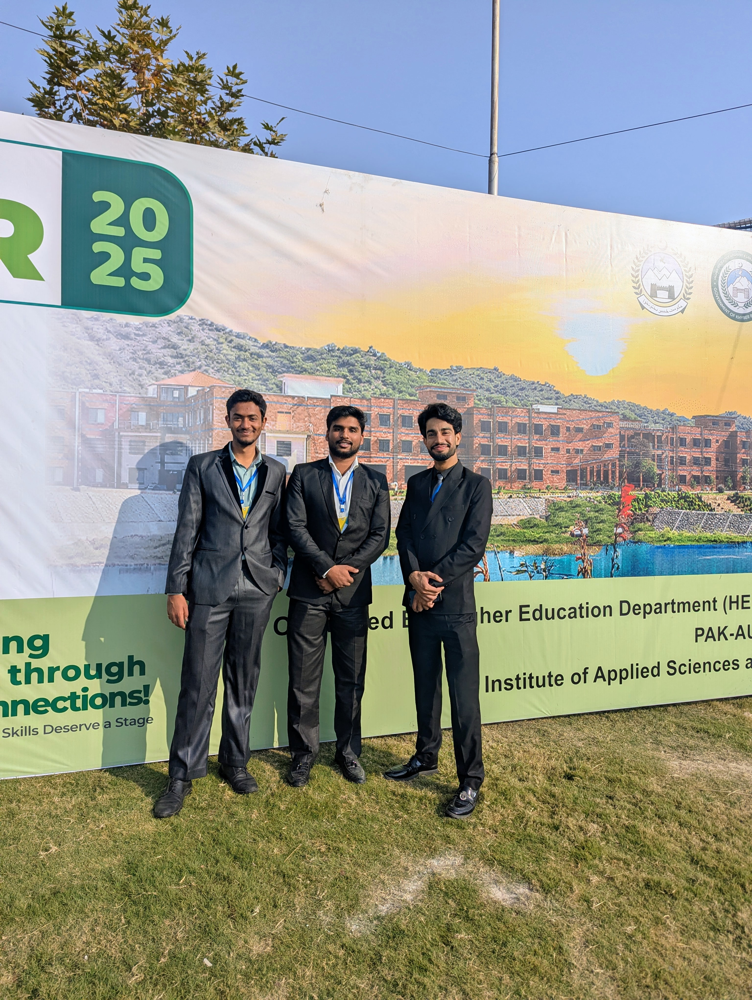
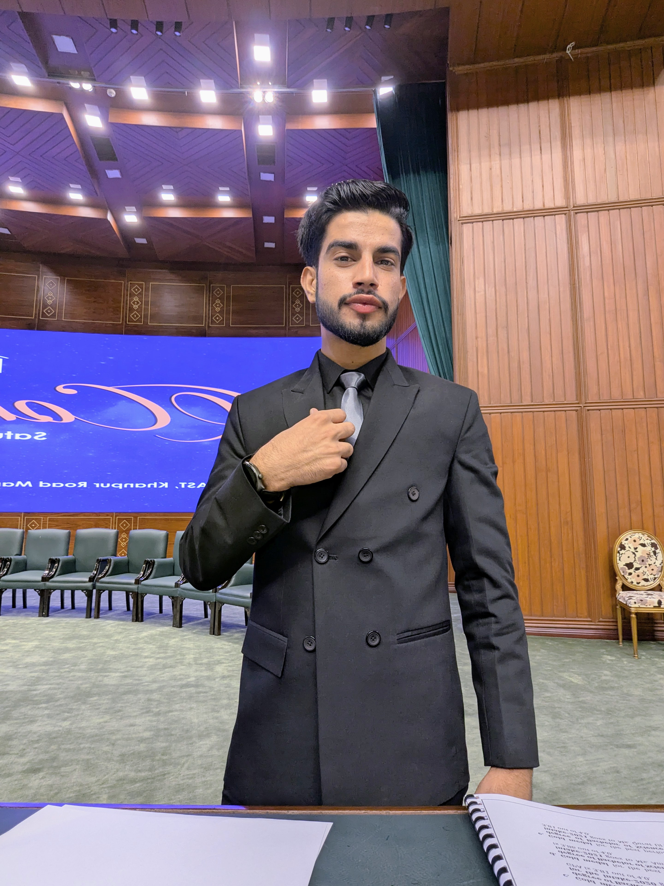
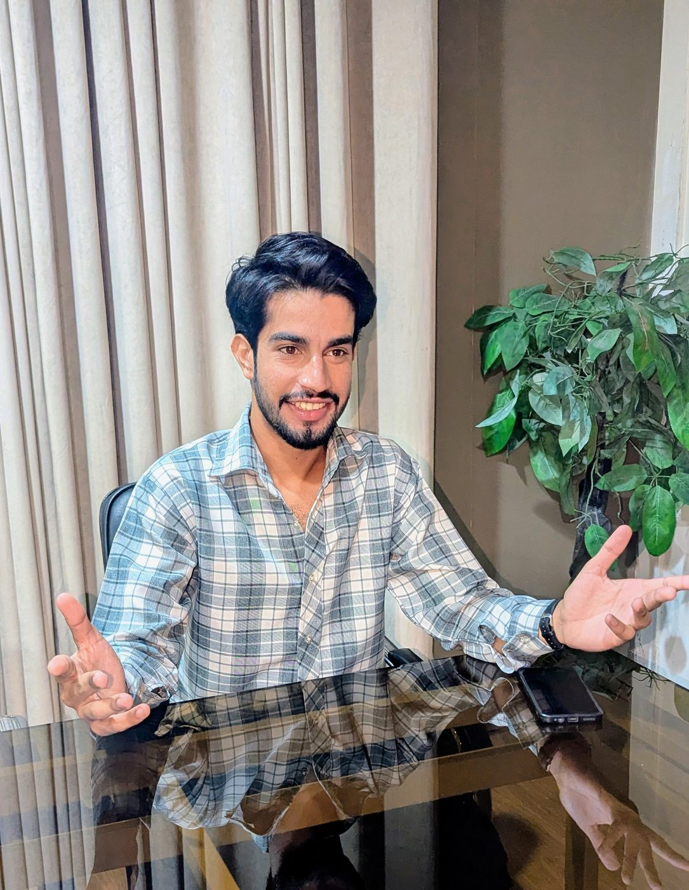

.jpg)





WRITER
HOST
ARCHITECT
SEO STRATEGIST
Ready to make an impact?
Let's Work Together →I don't measure my work by impressions.
I measure it by the conversations it starts.
I don't believe attention is the goal.
Attention is rented.
Meaning is owned.
Some ideas become essays.
Some become conversations.
Some become experiences.
Some simply change the way we see the world.
But they all begin the same way:
With a question worth asking.
I'm drawn to difficult questions.
To uncomfortable conversations.
To stories that don't fit neatly inside algorithms.
The internet has enough content.
What it needs is conviction.
This website isn't a collection of projects.
It's a public archive of the questions I'm willing to ask—
and the work I've created while searching for answers.
The work begins below.
Opinion writing, Substacks, and words that don't get skimmed. I craft narratives that stick, whether it's for my personal unsaid archives or high-end SEO client work.

Commanding the stage. Flawless protocol. Whether it's a university convocation or a provincial job fest, the energy shifts when I hold the mic.
Fiction, poetry, and words that linger.
I think I'm growing up
to resent what I once loved most
Like, for example,
my coffee—
so addictive, so dark,
so bitter, and icy cold.
Sometimes I can't tell
if I'm sipping
on him or my coffee..
I drink water now—
simple, clear,
always there, never burns,
never lies, just quietly stays.
The chain around my neck bothers them.
But the chains around them
the ones they cannot break
the chains of their name,
their class, their status,
their appearance,
the ones they cannot escape,
the ones that suffocated
the child they once harbored.
These chains do not seem to bother them.
And still they stand, silently
at the grave of "What could have been"
their regrets buried beneath bitterness
disguised as pride
a messy, twisted monument
to what they call "Being a man."